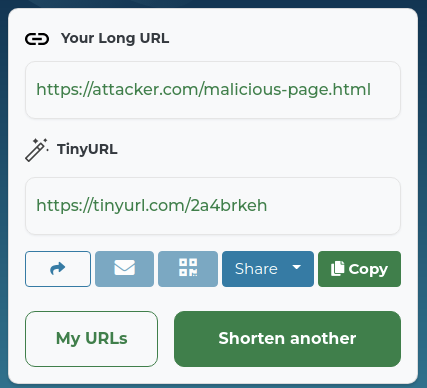
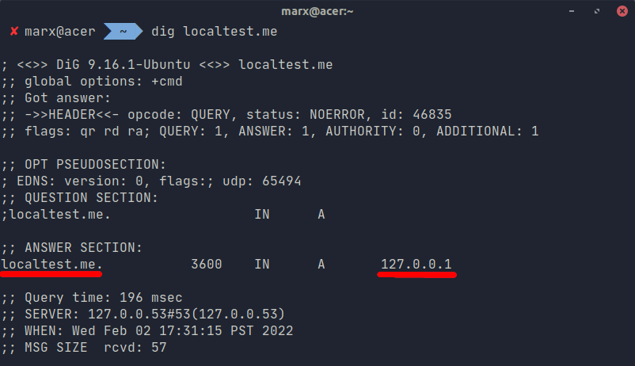

Advance Blacklisting and Whitelisting
Basic blacklisting and whitelisting can be bypassed using several methods. Some of these methods are:
- URL shortening
- Domain Redirection
- Alternative IP representations
- URI Normalization
URL shortening is a processes in which a URL is shorten to make it more readable and sometimes, to bypass (blacklisting) filters as well. Some examples of URL shorteners are:
- tinyurl.com
- shorte.st
- bit.ly
- goo.gl
Here is an example of how URL shortening is used to bypass filters. Assuming there is a website called site.com. Site.com disallows the use of the domain “attacker.com”. Using URL shortening form tinyurl.com, the attacker can rewrite this URL to
https://tinyurl.com/2a4brkeh which bypasses the filter since the domain “tinyurl.com” is not included in the blacklisted domains.

Domain redirection is quite related to URL shortening. URL spoofing works by setting up a domain name (for example is somesafesite.com). The attacker buys this domain from domain registrars such as GoDaddy and NameCheap. Then the attacker configures the somesafesite.com to point to attacker.com. Which means that if a user opens somesafesite.com, he will be automatically redirected to attacker.com.
In the image below, using the “dig” command, we can see that the “localhost.me” resolves to the IP address of 127.0.0.1. As an attacker, this will be useful if I am trying to bypass the “127.0.0.1” in the blacklist.

For the alternative IP address representations, we all know that we can access domains by typing the IP of it. For example, we can open google.com by directly using its IP address of 142.250.199.78. Many of us are aware of this, but only a few is aware of the different IP notations.
The http://142.250.199.78 can be rewritten in many ways. Some of them are as follows:
http://2398799694 (Decimal notation)
http://021676543516 (Octal notation)
http://0x8efac74e (Hexadecimal notation)
http://0x8e.0xfa.0xc7.0x4e (Full Hexadecimal notation)
http://0216.0372.0307.0116 (Full Octal notation)
http://0216.0372.199.78 (Random notation [octal for the first 2 bytes and decimal for the last 2 bytes])
http://0x8e.0372.199.78 (Random notation [hex for the first byte, octal for the second byte, and decimal for the last 2 bytes])
http://0x0008e.0x00000000fa.0x000c7.0x00000000000000000000000004e (Random padding hexadecimal notation)
http://000000000000000000000216.00000372.00000000000000000000307.000000000000116 (Random padding octal notation)
http://[0:0:0:0:0:ffff:142.250.199.78] (IPv6/IPv4 Address Embedding)
http://[::ffff:142.250.199.78] (IPv6/IPv4 Address Embedding)
Aside from this, there are also other ways that involve “incomplete” IP address. If we have a URI of http://1.0.0.1, this can be written as the following:
http://1.1 (some zeroes are optional)
http://1.0.1 (some zeroes are optional)
Another example is the Google's IP address of 142.250.199.78, this can be written as:
http://142.250.51022 (IP address overflow [the 51022 is just
199*256+
78, the last 2 bytes of Google's IP address])
The last bypass involves URI normalization. URI normalization is a proccess in which URIs are normalized to its standard form. In simple terms, think that you opened a browser. Then you typed the URL of hTTpS://wWw.gOOgLe.coM/ . Do you think that this will work? Yes, it will.
URI normalization is not limited to converting all characters to lowercase equivalent but it also converts other unicode characters to its normalized version. An example of this is:
https://ⒼⓄⓄⒼⓁⒺ.comhttps://ⓖⓞⓞⓖⓛⓔ.ⓒⓞⓜhttp://𝓰𝓸𝓸𝓰𝓵𝓮.𝓬𝓸𝓶 https://google｡com We can see here that there's a lot of bypasses but we will only try to implement a code that handles only the last two bypasses, the alternative IP addresses and URI normalization. This is because the URL shortening and the domain redirection is very hard to check. Why? Because we can shorten a URL for 100 times. We can also implement the domain redirection for 100 times as well, making it very very hard to validate. Even Facebook's url validation (Facebook's linkshim) only implements checking on the alternative IP address notation and URI normalizations.
References:
https://hackerone.com/reports/299130https://hackerone.com/reports/303378https://hackerone.com/reports/299135https://github.com/vysecurity/IPFuscatorhttps://stackoverflow.com/questions/9340298/uncommon-ip-notationshttps://twitter.com/loosesecurity/status/1331270289733324805?lang=enhttps://readme.localtest.me/https://portswigger.net/web-security/ssrfhttps://github.com/swisskyrepo/PayloadsAllTheThings/tree/master/Server%20Side%20Request%20Forgeryhttps://github.com/payloadbox/open-redirect-payload-list/blob/master/README.mdhttps://ma.ttias.be/theres-more-than-one-way-to-write-an-ip-address/